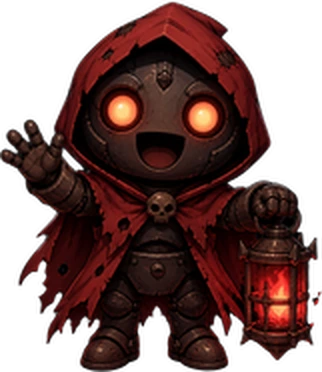

Só para você · deixe aberto no Microsoft Edge
Vigia do chat
Quando você estiver ausente, o Vigia responde o chat com voz e agradece bits, inscrições, raids e Pix. A voz sai por esta janela; o OBS pega pelo áudio da área de trabalho.
Clique quando sair. Se ligar o OBS abaixo, ele troca sozinho pela cena.
- Nada ainda.
Configuração
Pegue em aistudio.google.com/apikey com sua conta Google, sem cartão. A chave fica salva só neste computador.
Ele já sabe tudo o que está no site: heróis e habilidades, fases, criaturas e chefes, recursos, novidades, perguntas frequentes e os links.
Escrever no chat (para mandar os links)1. Entre em dev.twitch.tv/console/apps/create (pede autenticação em dois fatores na conta). 2. Nome: Vigia Ashem Vow. URL de redirecionamento: . Categoria: Chat Bot. Tipo de cliente: Público. 3. Copie o "ID do cliente" e cole abaixo. 4. Clique em Conectar e entre com a conta que vai escrever (a do canal ou uma conta só do bot).
Se o chat bloqueia links, dê moderador para a conta do bot: digite /mod nome_do_bot no chat.
Se o LivePix ou outro bot escreve no chat quando chega um Pix, coloque o nome dessa conta aqui e o Vigia agradece em voz.
Troca automática pelo OBS (opcional)No OBS: Ferramentas › Configurações do servidor WebSocket › marque "Ativar servidor WebSocket" e copie a senha.
Adicione no OBS uma fonte de navegador 1920 × 1080 com este endereço. Ela mostra o que o Vigia está falando.
Para o Vigia aparecer no quadro "AO VIVO" (no lugar da câmera), use este outro endereço numa fonte de navegador de 480 × 300: